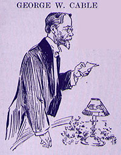

|  GEORGE W. CABLE said: MR. CHAIRMAN, one hardly knows whether to be more elated or more terrified at such an opportunity and honor as you have given me. I would I had the time to command my energies which would have given me the assurance to come, as some have come this evening, trusting to the inspiration of the hour and the inspiration behind it of the man. I have a lifetime's affection for Mark Twain, but my embarrassment consists in the fact that I come to you to-night with my strength discounted by a late sickness. That I only mentioned in order that I, too, may have my boast, that I have come from afar, nearly as far as Mr. Carnegie, to pay my tribute to our loved friend. But I must try and keep my head until I come to my manuscript, and not be like that good man whom we heard on the levee, Mark Twain, at New Orleans, when you came there, and Uncle Remus and Osgood were with us, and you read Bre'r Rabbit because we could not make Bre'r Rabbit read his own piece; and when you were leaving on the steamer every one was wanting to shake hands with you, as every one wants to shake hands with you wherever you go. And this good man was so full of the elation of the moment, so intoxicated with the pure spiritual joy of at least calling you by your best name or pet name, that he had not sobered up quite even after we were all pushed off the steamer, leaving you to go up the river, and he was coming down the stage plank with his arm around his friend's neck, saying -- hardly anything, but, "I, I was so embarrassed -- I -- I've read everything he ever wrote and I would thank him for every one of them, and when I got hold of his hand my heart was so big that the only thing I could think of his to thank him for was the "Heathen Chinee.'" (Laughter.) So I hope that I may have said -- I don't know what I have said myself, but I hope it's casting around for some word of tribute that might be more especially my own to the friend whose threescore years and ten we are celebrating to-night, and I believe that I am the only one in this entire company who ever spent threescore and ten almost consecutive days of travel, alternating on the platform in partnership and companionship with Mark Twain. It may be, while our attention is still concentrated on our friend, there may be room for me to allude to him as the only accepted interpreter of his own pieces by word of mouth, and the charm of that interpretation doubtless every one here can testify to from his own experience, and it is quite enough for me to mention them for your loving contemplation without another word. Always there was inspired in his hearers, and in his reader, the perception that what he received came from a treasury which nothing could diminish. I count that experience in the years 1884 and 1885 as one of the most notable in my life. Just twenty-one years ago that was. Both of us looked that much younger; I had just turned forty years of age and I had reached the very crossing, as I thought, of the dividing line; one day my senior partner -- the star in the troupe of two -- remarked that he was passing his forty-ninth year. "Your seventh seven," I said, and he said, "My seventh seven"; and now he comes to his tenth seven, and I trust he will go on to the eleventh, the thirteenth, and the fifteenth seven. (Applause.) I called that season one of the most notable in my life, because, for one thing, I saw underlying the homage of the people's heart all poured out in the floods of affectionate embarrassment to the man on whom they looked with such esteem and whom they crowned the King of Mirth. I learned then the power of his marvellous and overwhelming humor lay in the fact that it was always well grounded, that it was always the standard-bearer of truth or, at least, a majestic conviction of right and of human sympathy, as much as the rest. For seventy nights I heard his wit and colossal drollery convulsing audiences, and never for one moment could hint that the factor of license could seduce it. Mark Twain is never on the platform of King's Jester; he is always the King. (Applause.) I have seen him in sudden great junctures, -- you know I have seen you at times when you thought you had imperilled for an instant this kingly quality, and the thought always gave you exquisite pain. One night in a certain Canadian City, from time to time you could hear thundering with regularity that reverberation of sound from the audience that always greeted him, and as we drove back to our hotel Mark Twain was in a state of mental misery because, forsooth, he had spent his share of the whole talk merely spinning yarns, as he termed it, to an audience which would next morning realize the means he had sought to amuse them instead of giving them good literature. But, as I reminded him, we would have the same audience next night and he could give them as good literature as the world had ever had. This he did, and the result was as thunderingly flattering as before. Do you remember, Mark, how we sang almost nightly that old Mississippi ditty, "Jan and Gan?" I have never heard who that particular Jan was, but it is enough for us all to recognize here to-night that it was not and it is not yet Mark. Another of the things that I learned in that season twenty-one years ago, was that along with that perfect naturalness which was essentially his inherent character, Mark Twain on the platform practiced a painstaking heart. Do you remember, my old friend and big brother, that night in Buffalo when, after an excruciating succession of discharges of our shot, the steam-pipes began snapping and snorting, and you dared not answer them because you did not know how long they would keep up to the last word, and you went on with your reading while on your tongue all the time you had the request that "some one would please ask the janitor not the grit his teeth so loud"? Another aspect of that artistic temperament is evidence in this, that in all those seventy nights I never saw him betrayed into so much as a smile at himself, with the single exception when towards the close of a rather eventful evening, after the audience had been listening to his junior partner, the same audience broke into loud laughter on the appearance of the senior partner, and he could not help remarking, when a smile broke over his face, "Yes, that time they caught me." He confessed; he laughed, and I don't think his art left him even then, because I fancy it was the best art to laugh at the time. I saw in those days what an artist Mark Twain was, but Mr. Chairman, I am glad of the opportunity given me to confess in this gathering that I did not realize in those times how good a friend and how brotherly a well-wisher he was to me. Sometimes I think when the sevens of years have been seventy times seven, that confession is just what the world in general will make for itself. We have heard that the friend whom we celebrate has said he likes Cable well enough except for his religion. Well, I am bound to declare the exception well taken. The longer I live the less I am satisfied with my religion myself. But for all that, I must say that from the depth of my religion, -- Heaven send long years yet, Mark Twain, because you keep yourself too busy with more important matters. (Applause.) |